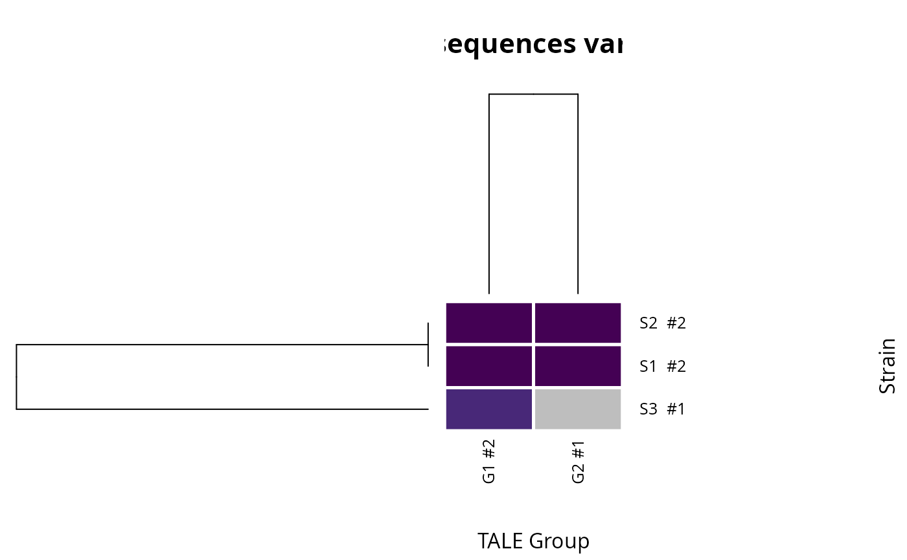

The function creates a graphical presentation from a tale annotation table. The output is like a heatmap that presents rvd sequence variants in Tal groups as column and respective strains as rows (or vice versa). It is different from a typical heatmap that it can display more than one value in a cell; for example, if one strain has 2 rvd sequence variants belong to 1 group, it will be displayed by 2 colors in 1 cell.
Usage
talomes_heatmap(
tale_annotation,
group_col,
strain_col,
rvd_col,
trunc_tales_col = NULL,
extra_col = NULL,
x_lab = "TALE Group",
y_lab = "Strain",
title = "RVD sequences variants",
plot_type = "all",
colors = viridis::viridis(10),
margins = c(5, 5, 3, 3),
sep_width = 5,
sep_color = "white",
inner_sep_color = "white",
save_path = NULL
)Arguments
- tale_annotation
a data frame containing at least 3 columns for Tal groups, strain names, and rvd seqs, and 1 row is 1 Tal.
- group_col
"character", column name of
tale_annotationto be displayed as columns in the heatmap (e.g. tal groups).- strain_col
"character", column name of
tale_annotationto be displayed as rows in the heatmap (e.g. strain names).- rvd_col
"character", column name for rvdseqs in the
tale_annotation- trunc_tales_col
(optional, default = NULL) "character", column name of
tale_annotationlabeling the truncTales by TRUE/FALSE value. The truncTales are labeled by "T" in the heatmap cells, but if this argument is called.- extra_col
(optional, default = NULL) "character", column name of
tale_annotationcontaining other information (e.g. origin). It will be presented in a side bar on the right of the heatmap.- x_lab, y_lab, title
character for x axix, y axis names and title
- plot_type
Either
"all"to draw every allele, or"single"to draw one representative allele per group.- colors
character vector of colors for the cells.
- margins
margin of the heatmap for row dendrogram, col dendrogram, rownames, colnames, respectively. (by default, c(5, 5, 3, 3)).
- sep_width
numeric value for the width of separator between adjacent cells.
- sep_color
character of color for the separator between adjacent cells
- inner_sep_color
character of color for the separator between colors within 1 cell if there are more than 1.
- save_path
(optional) file path to save the plot, format of the image depends on the file extension. If save_path is NULL, the heatmap will be printed. If save_path is specified, the image file will be created.
See also
Other TALE plots:
plot.tales(),
plot.tales_msa(),
plot_target_preds()
Examples
ann <- data.frame(
group = c("G1", "G1", "G1", "G2", "G2"),
strain = c("S1", "S2", "S3", "S1", "S2"),
rvdseq = c("NI-HD-NG", "NI-HD-NG", "NN-HD-NG",
"HD-NI-NG-NG", "HD-NI-NG-NG")
)
talomes_heatmap(ann, group_col = "group", strain_col = "strain",
rvd_col = "rvdseq")
